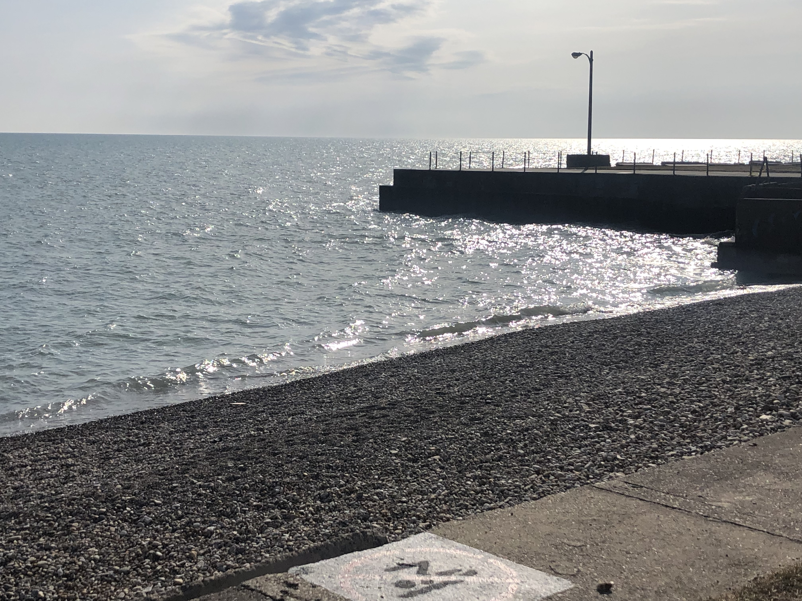
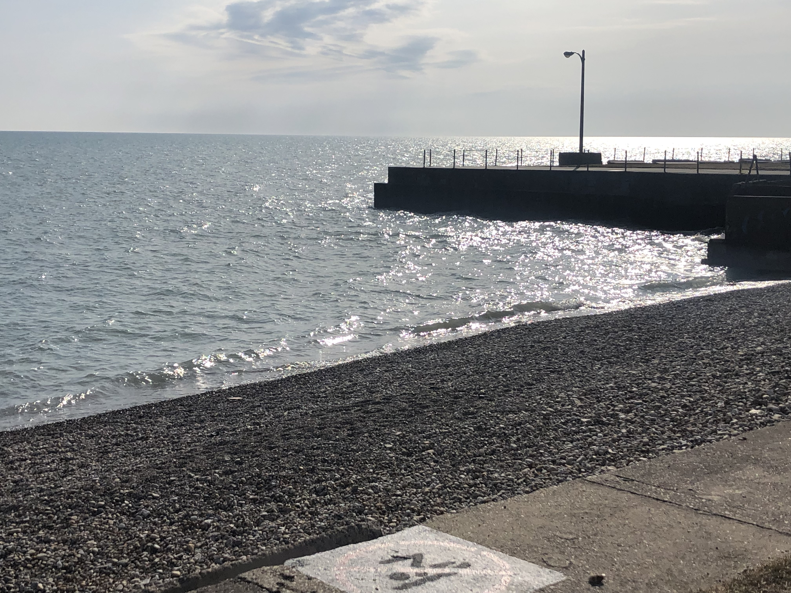

These images were captured in March at Roger's Park Beach located in the northern suburbs of Chicago and along the Lincoln Park beach pathway. The pictures were taken on a Canon AE-1 on 35mm film. Roger's park beach is reachable just off the Howard stop on the redline. On the day I visited this location many petowners and their dogs could be seen frollicking along the shorelne. A link with directions to this beach will be displayed at the bottom of this page. The Lincoln Park beach pathway is found just a few blocks from DePaul's Lincoln Park Campus and runs along the entirety of Lake Michigan's shoreline.
Directions To Beach